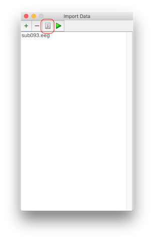
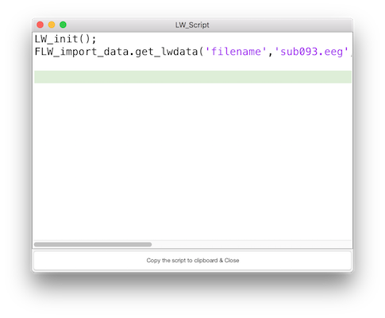
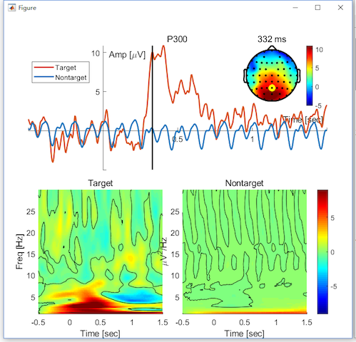

Script in Letswave7
In addition to the graphical user interface (GUI), script may be the most commonly used feature in Letswave7. Script provides users more freedom in the EEG processing, but also requires users to have a more solid programming foundation, which makes it difficult for the researchers without relevant backgrounds to use. Letswave7 is dedicated to solving this problem.
Script of Batch Processing
In Letswave7, the system runs a batch processing by running the corresponding Matlab script. Once the processing flow has been made, the corresponding Matlab script has already been generated automatically. Users can click the “script” button in the batch module to get the full script. Once the users have learned the use of GUI, they almost already understand the writing of script.
Script of Single Step
The script for the single step operation can also be obtained with the “script” button in the lower right corner in each step of batch processing, which can tangibly reduce the users’ dependence on the tutorial and the help document. This feature is essential, since it can effectively help the script-based user to speed up the script writing and improve the quality of the script. More importantly, it can really reduce the script-based user’s entry threshold. Even the users without a solid background for Matlab programming are able to write high quality script for batch EEG signal processing.
In Letswave7, we provide a rich function library for the script-based users, which are starting with FLW_. The grammar of all the functions in this library is uniform. For one step of operation, we need just need define the option and then call the corresponding FLW function.
option=struct('XXX',xxx,'XXX',xxx);
lwdata= FLW_XXX.get_lwdata(lwdata,option);
The parameters setting in the option is identical to the parameters selection in the GUI. It just needs to be noticed whether the input and output of the function is a single dataset or multiple datasets.
Easy Access to the Data
Each dataset can be easily accessed by clicking “send to workspace” in the right menu in the manager module, which would be appeared as a variable with the name of “lwdata” in the workspace of Matlab. Then the script-based user can make their own operation on the dataset in Matlab. After the operation, the user can also save the dataset in the format of Letswave by clicking “read from workspace” in the right menu in the manager module.
Similarly, the other information is also easily to be accessed in the other modules, such as the event information, the channel name and statistical result about the mean, maximum and minimum value.
Script of Data Importing and Figure Generation
Not only the operations in the batch module, the other operations, like data import and figure generation, can also be scriptlized. Hence, from data import, to preprocessing, time/frequency analysis and statistical analysis, to the final figure generation, the whole process for the EEG signal signal analysis can be easily and quickly written as a script.
Example
Here, we repeat the data analysis of the P300 dataset for example to demonstrate the use of script in Letswave7.
Script 1 Data Importing
Switch the Letswave path to “rawdata1”. Open the dialog of the data importing and select the dataset “Sub093.eeg”. Instead of clicking the button Run, we can click the button script to obtain the script for data import, which can be download as script1.m. Run script1 in Matlab, we can also load the dataset “Sub093” as it is by clicking the button Run.


Script 2 Single Subject Analysis
Open the batch processing “P300 Process.lw_script” that we saved in Chapter 4-2. Add the time-frequency analysis in Chapter 1.5. Instead of clicking the button Run, we can click the button script to have the script for single subject analysis, which can be download as script2.m. Run script2 in Matlab, we can also finish the single subject analysis as it is done in Chapter 1.
Script 3 Single Subject Analysis (Edited)
Once you are familiar with Letswave script and Matlab programming, you can combine the two scripts into script3.m and edit it to improve efficient and change the name of the datasets for the further multiple subjects analysis.
Run the script3.m in Matlab, we can have the averaged result “Sub093 P300 target” and “Sub093 P300 nontarget” for time domain analysis, “cwt Sub093 P300 target” and “cwt Sub093 P300 nontarget” for time frequency domain analysis.
Script 4 Figure for Single Subject
Select the dataset “Sub093 P300 nontarget.lw6”, “Sub093 P300 target.lw6”, “cwt Sub093 P300 target.lw6”, “cwt Sub093 P300 nontarget.lw6”. We can make the figure as it is shown in Chapter 3.1. Click the button script to get the script for figure generation which can be download as script4.m. Run the script4 in Matlab, we can have the similar figures, but the position of the legend need to be adjusted.

Script 5 Multiple Subjects Analysis
Switch the path of Letswave to “rawdata2” and repeat the operation of grand average and statistical analysis in Chapter 2-1 and Chapter 2-2. After the editing by the String manipulation and adding a for loop, we can have the script for multiple subjects analysis, which can be download as script5.m.
Run the script5 in Matlab, we can have the exactly the same result as it is in Chapter 2-1 and Chapter 2-2.